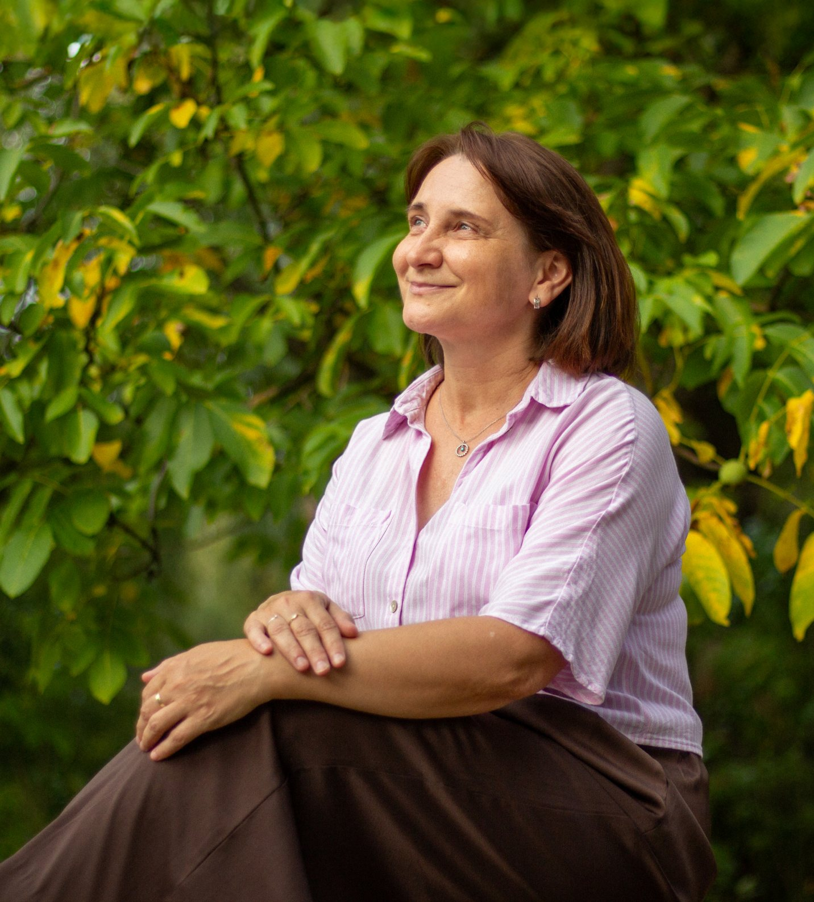
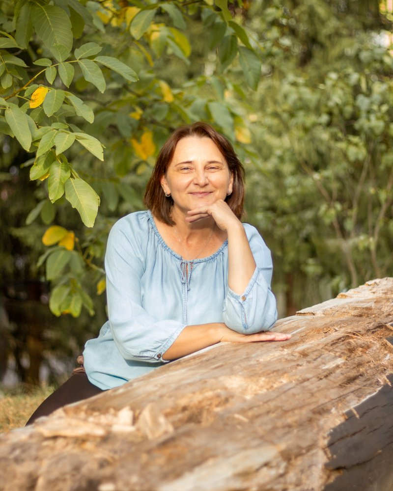

Som Adriana Záskalanová, mama štyroch detí a k tomu psychologička, rodinná poradkyňa aj koučka. Už 25 rokov som pri rodinách – od prvej myšlienky na bábätko až po dospievanie.
Objednať konzultáciuNezáväzne – prvá odpoveď je zadarmo.
Online a v okolí
Banskej Bystrice

Nemusíte presne vedieť, čo potrebujete. Spoznajte, čo je vám blízke – a napíšte mi. Prvá odpoveď je nezáväzná a zadarmo.
Dieťatko milujete a zároveň máte pocit, že ste za posledné mesiace zmizli? Že už neviete, kto ste, keď nie ste mama alebo ocko? To sa hovorí ťažko – nahlas ešte ťažšie. Nemusíte riešiť logistiku s kočíkom ani sa nikam baliť. Prídem za vami domov alebo sa spojíme online.
Ráno bolí bruško a v nedeľu večer sa zhorší nálada. Alebo zvažujete odklad a neviete sa rozhodnúť. Posúdim školskú zrelosť pred nástupom do prvej triedy a pomôžem s ťažkosťami v učení aj v triede. Aby škola nebola miesto, kam sa dieťa bojí ísť.
Neviete, ako to dieťaťu povedať. Ani ako mu vysvetliť, že sa nič nepokazilo kvôli nemu – a že ho neprestane mať rád ani jeden z vás. Pomôžem dieťaťu spracovať vinu, strach aj hnev. A vám ukážem, ako s ním hovoriť a ako preňho zostať oporou, aj keď sami nemáte silu.
Nič dramatické sa nestalo, no hádate sa stále o tom istom. Za vzdorom aj zabuchnutými dverami je vždy nejaká potreba – dieťa ju len nevie pomenovať a vy ju cez ten hluk nepočujete. Pomôžem vám v ťažkom období upokojiť napäté situácie, nastaviť láskavé hranice a nájsť spoločnú reč.
Odmieta zaspávať samo, bojí sa tieňov či odlúčenia a plače bez zjavnej príčiny.
Detské strachy často nedávajú dospelú logiku, no pre dieťa sú úplne skutočné. Najradšej by ste tú ťažobu zobrali na seba. Nemusíte v tom tápať – ukážem vám, ako čítať signály detského prežívania, pomôcť mu bezpečne spracovať veľké emócie a vybudovať v ňom vnútornú istotu a odolnosť od útleho veku.
Ešte pred rokom ste vedeli všetko. Teraz sú dvere zatvorené a odpovede jednoslovné. Aj keď to tak nevyzerá, vaše dieťa vás aj teraz veľmi potrebuje. Pomôžem vám porozumieť zmenám, ktorými dieťa prechádza, reagovať na ne s nadhľadom a budovať medzi vami vzťah založený na dôvere a rešpekte, ktorý vydrží aj po puberte.
Spolupracujem s klinickým psychológom a psychoterapeutom Jánom Záskalanom. Ak budete potrebovať niečo, čo neponúkam – napríklad párovú terapiu – odporučím vás jemu.
Niečo málo o mne
Najprv nás podrobí skúške a až potom naučí pravidlá. Emócie našich detí – aj tie naše vlastné – dôverne poznám nielen z odborných kníh, ale najmä z vlastnej skúsenosti.

Bola som školskou psychologičkou na základnej a strednej škole, pracovala som s rodinami v rozvodovom konaní aj s deťmi, ktorým sa zrazu svet zdal príliš veľký. Desať rokov som viedla materské centrum a bola pri matkách, ktoré prvýkrát držia bábätko a nevedia, čo teraz. Každé z tých miest ma naučilo niečo iné.
Moje vzdelanie a vlastné materstvo som spojila do Rodinnej poradne. Nie preto, aby som vám dávala rady. Ale aby ste odišli s tým, že svojej rodine rozumiete o čosi lepšie.
Nie každý rozhovor sa dá viesť za stolom. Vyberte si formu, ktorá sadne vášmu dňu.
Najčastejšia forma. Odkiaľkoľvek na Slovensku aj zo zahraničia – z gauča, spálne či kuchyne.
Dĺžka a cena: Základné sedenie trvá 60 minút a cena je 60 €. V prípade potreby komplexnejšieho rozboru je možné dĺžku stretnutia po vzájomnej dohode vopred upraviť.
Platformy: Konzultácie prebiehajú cez overené videohovory podľa vašich preferencií – Google Meet, WhatsApp alebo Messenger.
Prostredie: Pripravte si pokojné miesto, kde sa budete cítiť bezpečne, uvoľnene a kde nebudete počas rozhovoru nikým rušení.
Prídem za vami do Banskej Bystrice a okolia – všade, kam to mám do 30 minút. A vy nemusíte organizovať presun rodiny, ani cestu s kočíkom.
Niekedy je najlepším riešením osobný rozhovor tam, kde sa cítite najprirodzenejšie – v pohodlí a bezpečí vášho domova. Táto forma je ideálna pre rodiny s menšími deťmi, pre riešenie bežných domácich situácií alebo pre tých, ktorí preferujú osobný kontakt bez nutnosti cestovať.
Ako prebieha návšteva?
Flexibilný čas: Stretnutie spoločne naplánujeme tak, aby dokonale zapadlo do denného režimu vašej rodiny a vyhovovalo vašim časovým možnostiam.
Dĺžka sedenia: Štandardné stretnutie trvá 90 minút, čo poskytuje dostatok času a priestoru ísť do hĺbky bez zbytočného zhonu.
Cena stretnutia: 90 € za 90-minútovú konzultáciu. V prípade individuálnych potrieb vieme dĺžku aj cenu po vzájomnej dohode vopred upraviť.
Doprava: V rámci Banskej Bystrice a do 30 km je doprava zabezpečená bez komplikácií. Ak sa nachádzate viac ako 30 km od Banskej Bystrice, na primeranom poplatku za dochádzku sa vopred férovo dohodneme.
Niektoré veci sa povedia ľahšie, keď sa ide vedľa seba a nemusíte sa pozerať do očí.
Niekedy je ľahšie hovoriť o náročných témach, keď nesedíte tvárou v tvár v uzavretej miestnosti. Konzultácia počas chôdze v prírode alebo v pokojnom parku spája výhody odborného rozhovoru s prirodzeným účinkom pohybu na čerstvom vzduchu.
Ako to funguje?
Rovnaké podmienky ako pri online konzultácii: stretnutie trvá 60 minút a cena je 60 €. Dlhší čas je možný po vzájomnej dohode.
Lokalita: Vyberieme príjemnú a tichú trasu v Banskej Bystrici a blízkom okolí, kde budeme mať dostatok súkromia na nerušený rozhovor.
Keď to potrebujete napísať skôr, než to poviete nahlas. Alebo keď na rozhovor zatiaľ nemáte silu.
V e-maile podrobne opíšte svoju situáciu, otázky, pocity či konkrétny problém, s ktorým si v rodine neviete rady. Môžete písať kedykoľvek – večer po uspatí detí, cez víkend alebo postupne po častiach.
Po prijatí vašej správy pripravím pre vás komplexnú písomnú odpoveď. Získate nový pohľad na dynamiku vo vašej rodine, praktické odporúčania a konkrétne kroky, ktoré môžete hneď vyskúšať.
Cena za e-mailovú konzultáciu: 50 €
Doba odpovede: Podrobnú spätnú väzbu obvykle odosielam do 2 až 3 pracovných dní od doručenia vášho e-mailu (a potvrdenia platby).
Rozprávať sa môžeme len vy a ja, v páre, s dieťaťom aj s celou rodinou – podľa toho, čo vám dáva zmysel. Ak neviete, napíšte mi a vyberieme to spolu.
Napíšte miMáte otázky? Rada odpoviem.
Pripravila som pre vás prehľad najčastejších otázok, s ktorými sa na mňa rodiny obracajú pred začatím našej spolupráce.
1. Napíšete mi pár viet: Cez kontaktný formulár alebo e-mailom. Stačí stručne opísať, čo sa u vás deje – nemusíte mať nič premyslené ani správne pomenované.
2. Do dvoch dní vám odpoviem: Prvá odpoveď je nezáväzná a zadarmo. Napíšem vám, ako vám viem pomôcť, a spolu vyberieme formu, termín aj dĺžku stretnutia.
3. Stretneme sa: Online, u vás doma, na prechádzke alebo si napíšeme – podľa toho, čo vám v tej chvíli sadne najviac.
4. Ďalší krok je na vás: Niekomu stačí jedno stretnutie, iní sa radi vrátia. O pokračovaní sa rozhodujete sami, nič nie je povinné.
Poradenstvo nespočíva v rozdávaní univerzálnych rád. Mojou úlohou nie je hovoriť vám, ako presne máte žiť, ale:
Sprevádzať vás pri uvedomení si potrieb: Pomôcť vám zorientovať sa v tom, čo vy a vaša rodina potrebujete, aby ste lepšie zvládali aktuálnu životnú situáciu.
Objaviť vaše vlastné zdroje: Uvedomiť si silné stránky a nástroje, ktoré už máte k dispozícii, no v kríze na ne možno zabúdate.
Pomenovať prekážky: Jasne zadefinovať ťažkosti, obmedzenia a problémy, ktoré vám stoja v ceste.
Nájsť motiváciu k riešeniu: Preskúmať to, čo vás vnútorne poháňa zmeny urobiť a prekonať výzvy.
Mojím cieľom je pomôcť vám využiť váš vlastný potenciál, podporiť vašu samostatnosť, inšpirovať vás a naučiť praktické spôsoby, ako krízy zvládať.
Napíšte mi krátky popis vašej situácie a lokalitu, kde bývate. Spoločne nájdeme termín, ktorý vám bude najlepšie vyhovovať a dohodneme si podmienky stretnutia.
Táto forma je najvýhodnejším riešením pre mamičky na materskej dovolenke a čerstvé mamičky krátko po pôrode. V období, keď je starostlivosť o bábätko fyzicky i emočne vyčerpávajúca a dieťatko nie je možné nechať samé ani na hodinu, nemusíte riešiť náročné balenie, presuny ani stráženie. Poradenstvo prebehne v bezpečí vášho domova, priamo pri bábätku a v tempe, ktoré rešpektuje potreby vás oboch.
Ak radšej svoje myšlienky formulujete písomne, potrebujete si veci najprv v pokoji utriediť, alebo vám váš harmonogram nedovoľuje zladiť sa na konkrétny čas hovoru, e-mailová konzultácia je diskrétny a flexibilný spôsob, ako získať odborný pohľad na vašu rodinnú situáciu. K celej odpovedi sa môžete kedykoľvek vrátiť, prečítať si ju znovu s odstupom času alebo si dôležité body pripomenúť.
Výhodou e-mailového poradenstva je flexibilita, nie ste viazaní na presný dátum ani čas stretnutia. Máte čas na premyslenie, a písanie vám umožní pomenovať aj veci, ktoré by sa pri osobnom rozhovore hovorili ťažko. Je to diskrétne a pohodlné, konzultáciu riešite odkiaľkoľvek, bez nutnosti zapínať kameru či mikrofón.
Niekedy je ľahšie hovoriť o náročných témach vtedy, keď nesedíte tvárou v tvár v uzavretej miestnosti. Konzultácia počas chôdze v prírode alebo v pokojnom parku spája výhody odborného rozhovoru s prirodzeným účinkom pohybu na čerstvom vzduchu.
Menší tlak, ľahšie otvorenie sa: Pohyb bok po boku uľahčuje zdieľanie citlivých tém bez pocitu napätia z neustáleho očného kontaktu.
Čistá hlava vďaka prírode: Chôdza pomáha odbúravať stres, uvoľňuje nahromadené emócie a prináša nový nadhľad na riešené situácie.
Nové myšlienky: Fyzický pohyb často podporí mentálnu flexibilitu a uľahčuje hľadanie nových riešení.
Pre koho je táto forma vhodná?
Pre každého, kto preferuje osobný kontakt, no necíti sa dobre v klasickej poradenskej miestnosti, pre toho, kto chce mať so sebou malé dieťa v kočíku a nemusí tak rozmýšľať, či je v poriadku, alebo pre každého, kto preferuje neformálne stretnutia pri chôdzi.
Áno, určite. Poradenstvo pre deti a mladých ľudí poskytuje bezpečný a dôverný priestor, kde môžu slobodne vyjadriť svoje pocity, obavy a otázky bez strachu, že niekoho zrania alebo sklamú. Konzultácia pre dieťa je mimoriadne nápomocná najmä v týchto situáciách:
Rozvod alebo rozchod rodičov: Deti často prežívajú vnútorný konflikt lojality, smútok, neistotu z budúcich zmien alebo neopodstatnený pocit viny za rozpad rodiny. Spoločne hľadáme cestu, ako tieto zmeny prijať a zvládnuť.
Tínedžerský vek a dospievanie: Obdobie hľadania vlastnej identity, tlaku zo školy, rovesníckych vzťahov či nepochopenia doma. Rozhovor s neutrálnym dospelým pomáha dospievajúcim utriediť si myšlienky a nájsť vlastnú stabilitu.
Emočné ťažkosti: Úzkosti, častý hnev, uzavretosť, strachy, nízke sebavedomie či výkyvy nálad, s ktorými si dieťa samo nevie dať rady.
Rozhovor s dieťaťom vždy prebieha citlivo, s rešpektom k jeho veku a tempu. Pri práci s deťmi a dospievajúcimi zároveň v primeranej miere spolupracujem s rodičmi, aby sme spoločne vytvorili stabilné a podporujúce zázemie pre celú rodinu.
Nie, rodinné poradenstvo nie je psychoterapia.
Hoci sa oba prístupy venujú podpore človeka a vzťahov, majú odlišné zameranie. Nie každý klient potrebuje dlhodobú psychoterapiu a nie každý odborník v pomáhajúcej profesii je psychoterapeut. V mnohých životných situáciách ľudia a rodiny oveľa viac vyťažia z kvalitných poradenských intervencií bez potreby absolvovať psychoterapiu.
Cieľom rodinného poradenstva nie je analyzovať minulosť celé roky, ale sprevádzať vás prítomnosťou a pomôcť vám nájsť funkčné riešenia, ktoré prinesú pokoj a stabilitu do vášho rodinného života.
Nie, súdnoznalecké posudky ani správy pre účely súdneho konania nevypracúvam. Moja úloha nie je hodnotiť rodičov pre súd ani rozhodovať o tom, kto je „lepší“ rodič. Mojím poslaním je stáť pri vás a vašich deťoch ako nezávislá a bezpečná opora v tomto náročnom období.
V čom vám počas rozchodu či rozvodu pomôžem:
Ochrana psychickej pohody detí: Zameriavam sa na to, aby deti celú situáciu zvládli čo najlepšie, necítili zodpovednosť za rozpad vzťahu a zbavili sa pocitov viny či strachu.
Zdravá rodičovská komunikácia: Pomáham rodičom oddeliť partnerské nezhody od rodičovských rolí a nastaviť vecnú, rešpektujúcu komunikáciu bez vzájomných útokov.
Nastavenie starostlivosti v záujme dieťaťa: Poskytujem poradenstvo pri hľadaní najvhodnejšieho modelu fungovania – či už ide o striedavú starostlivosť alebo iný režim – vždy s ohľadom na vek, potreby a citové prežívanie dieťaťa.
Prevencia zranení: Hľadáme konkrétne spôsoby, ako predísť tomu, aby sa deti stali nástrojom v boji medzi dospelými.
Cieľom nie je vyhrať spor na súde, ale zabezpečiť, aby vaše deti mali dvoch fungujúcich rodičov a bezpečný domov aj po rozchode.
Áno, ale s citom. V správnom čase a vhodným spôsobom vám ponúknem konkrétne informácie, nápady či odporúčania. Dobrá rada však funguje len vtedy, ak vychádza z vášho jedinečného kontextu a sami cítite, že je pre vás realizovateľná.
Nie. Rodinné poradenstvo nenahrádza psychologickú, psychiatrickú, lekársku ani krízovú starostlivosť. Pri bezprostrednom ohrození kontaktujte tiesňovú linku alebo príslušného odborníka.
Napíšte mi pár viet. Rada s vami preberiem akékoľvek nejasnosti a pomôžem vám vybrať formu konzultácie, ktorá vám sadne. Prvá odpoveď je nezáväzná a zadarmo.
Napíšte mi správuStačí pár viet o tom, čo sa u vás deje.
Kontaktný formulár
Dohodnúť konzultáciu cez formulárNapíšte kedykoľvek. Odpoviem vám do dvoch dní a dohodneme sa na termíne aj forme. Prvá odpoveď je nezáväzná a zadarmo.
Kde sa stretneme
Prídem všade, kam to mám do pol hodiny – Zvolen, Sliač, Slovenská Ľupča aj Donovaly. A ak ste kúsok ďalej, napíšte mi aj tak, dohodneme sa.
Online sa stretneme kdekoľvek – na Slovensku aj mimo neho.
Niekedy je len treba, aby ju niekto sprevádzal, pomenoval to, čo sa deje, a pomohol nájsť nové riešenia.
Napíšte mi